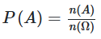
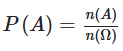
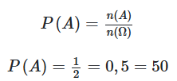
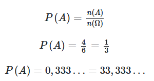

◉ Fundamentos da probabilidade
A probabilidade de um evento ocorrer é calculada pela razão entre o número de casos favoráveis ao evento e o
número de casos possíveis.
Probabilidade é um conceito estatístico relacionado a situações aleatórias. A probabilidade de um evento
é indicada por um número entre 0 e 1, sendo 0 um evento impossível e 1 um evento certo. O cálculo da probabilidade
de um evento é realizado pela razão entre o número de casos favoráveis ao evento e o número de casos possíveis.
◉ Resumo sobre probabilidade
• O estudo da probabilidade é a análise de experimentos aleatórios.
• Espaço amostral é o conjunto formado por todos os resultados possíveis de um experimento aleatório.
• Se todos os resultados têm a mesma chance de ocorrer, o espaço amostral é chamado de equiprovável.
• Evento é um conjunto particular de resultados de um experimento aleatório.
• A probabilidade de um evento A ocorrer é a razão entre o número de elementos do conjunto A e o número de
elementos do espaço amostral:

• A probabilidade é sempre um número de 0 a 1.
◉ O que é probabilidade?
Probabilidade é a chance de obter determinado resultado em um experimento. Fundamentos probabilísticos são
utilizados na análise de experimentos e situações aleatórias e podem contribuir para tomadas de decisões em
diferentes contextos.
Para desenvolver o estudo da probabilidade, precisamos compreender alguns conceitos básicos.
➤ Ponto amostral na probabilidade
Considere uma situação ou experimento que pode produzir diferentes resultados cada vez que ocorrer (ou seja, um
experimento aleatório). Cada resultado particular é chamado de ponto amostral.
Exemplo: A face superior resultante do lançamento de um dado é um experimento aleatório. Cada face é um ponto
amostral.
➤ Espaço amostral na probabilidade
Espaço amostral é o conjunto de todos os possíveis resultados de um experimento. Esse conjunto é frequentemente
expresso pela letra grega maiúscula Ômega: Ω .
Exemplo: A face superior resultante do lançamento de um dado de 6 faces pode ser o número 1, 2, 3, 4, 5 ou 6. Logo,
nesse experimento, Ω= {1,2,3,4,5,6}.
→ Espaço amostral equiprovável
Um espaço amostral é chamado de equiprovável se todos os resultados possuem a mesma chance de acontecerem.
Exemplo: Ao lançar um dado comum (também chamado de “não viciado”) de 6 faces, a chance de obter, na face
superior, o número 1 é a mesma de obter o número 2, que é a mesma de obter o número 3 e assim por
diante. Portanto, o espaço amostral Ω={1,2,3,4,5,6} é equiprovável.
◉ Tipos de probabilidade
Existem diferentes concepções acerca do estudo de probabilidade.
• A probabilidade clássica supõe um espaço amostral equiprovável para o cálculo de probabilidades.
• A probabilidade empírica (ou frequentista) considera que o cálculo de probabilidade deve ser
realizado a partir de repetições do experimento e análise dos resultados.
• A probabilidade subjetiva se baseia em ideias, crenças e julgamentos pessoais. Consequentemente,
o cálculo de probabilidade em determinado contexto pode variar de uma pessoa para outra.
Observação: Nos exemplos deste texto, trataremos de situações relacionadas à probabilidade clássica.
◉ Eventos na probabilidade
Um evento é um conjunto específico de resultados e geralmente é representado por uma letra maiúscula.
Considere o experimento de lançar um dado de 6 faces e observar a face superior. Exemplos de eventos são:
A = Obter um número ímpar.
B = Obter um número par.
C = {1,2} (Obter o número 1 ou o número 2.).
D = {1, 2, 3, 4, 5, 6} (Obter um número de 1 a 6.).
E = {7} (Obter o número 7).
Note que os eventos A, B, C e D são subconjuntos do espaço amostral (o evento D, inclusive, é igual ao espaço
amostral). Assim, os eventos A, B e C são eventos possíveis e o evento D é um evento certo, pois com certeza
a face obtida será um número de 1 a 6. Já o evento E é chamado de evento impossível, pois não podemos obter
o número 7 ao lançar um dado de 6 faces.
◉ Fórmula da probabilidade
Agora que conheçemos esses conceitos fundamentais, podemos seguir com o cálculo básico de probabilidade. Vamos
representar a probabilidade de um evento A acontecer por P(A).
A probabilidade de um evento A ocorrer a partir de um experimento é a razão entre o número de casos favoráveis
a esse evento e o número total de casos possíveis. Isso significa, respectivamente, a razão entre o número de
elementos do conjunto A e o número de elementos do espaço amostral do experimento.

• P(A) → probabilidade do evento A ocorrer.
• n(A) → número de elementos do conjunto A, ou seja, a quantidade pontos amostrais favoráveis à ocorrência de A.
• n(Ω) → número de elementos do espaço amostral.
Observações:
→ Frequentemente essa razão é expressa nas formas percentual e decimal.
→ Note que P(A) é um número de 0 a 1. Se A for impossível, n(A) = 0 e P(A) = 0 = 0% . Se A for o espaço amostral,
então n(A)= n(Ω) e P(A)= 1= 100% .
◉ Como calcular probabilidade?
Para calcular a probabilidade de um evento, devemos determinar o número de casos favoráveis à sua ocorrência e o
número de casos possíveis para aplicar a fórmula.
Exemplo 1: Qual a probabilidade de obter a face “cara” no lançamento de uma moeda?
Seja A o evento de obter a face “cara” no lançamento de um moeda. Há dois possíveis resultados para o lançamento
de moeda: “cara” ou “coroa”. Assim, Ω= {cara,coroa}, ou seja, o número de elementos do espaço amostral
é 2. Ainda, o número de casos favoráveis ao evento A é 1, que é o resultado “cara”. Portanto,

Exemplo 2: Qual a probabilidade de obter um número de 2 a 5 no lançamento de um dado de 6 faces?
Seja A o evento de obter um número de 2 a 5 no lançamento de um dado de 6 faces. Como observamos anteriormente,
há 6 possíveis resultados: Ω= {1,2,3,4,5,6}. Assim, o número de casos possíveis é 6.
Ainda, os casos favoráveis ao evento A são 2, 3, 4 e 5, pois são os números de 2 a 5 em um dado de 6
faces. Assim, A= {2, 3, 4, 5} e o número de elementos de A é 4.
Logo:

Observação: O cálculo de probabilidade para dois ou mais eventos envolve a relação entre esses eventos. Para
mais detalhes, consulte artigos como Probabilidade condicional e Probabilidade da união de dois eventos.
◉ Diferenças entre probabilidade e estatística
A estatística é uma área do conhecimento que estuda a coleta, representação e análise de dados. Já a
probabilidade é uma parte da estatística que compreende o estudo de eventos aleatórios e incertos.